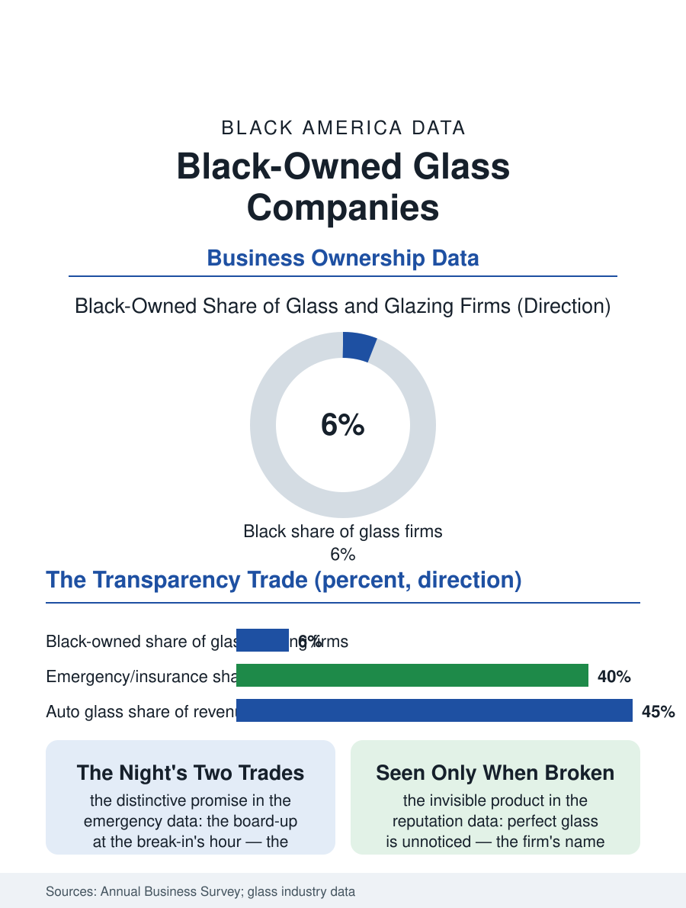

Black Business
Transparency, Kept: Black-Owned Glass Companies
Perfect work that is invisible, sold by the night's emergency and the morning's restored storefront. The glass file.

The glass company cuts, installs, and replaces the built environment's transparency, from the storefront's plate to the shower's enclosure and the windshield's laminate, in a trade whose Black-owned firms descend from the glazier's craft and the auto glass routes of the service economy. The business census counts the glass and glazing establishments in the thousands. This article reads the glass file.
Storefronts and the 24-Hour Board-Up
The commercial tier is the firm's institutional face: the storefront systems of the retail corridors, the curtain walls of the small commercial buildings in the glazier's rather than the giant's tier, and the emergency service that is the trade's distinctive promise, the board-up and the replacement at the break-in's and the storm's hour, a 24-hour obligation whose rotation the firm's owner carries in the pattern of the locksmith's midnight call, the two trades meeting at the same violated doorway in the same night's work. The insurance file supplies the emergency tier's channel as the flooring file's water claim does, the mitigation and the carrier's vendor list being the route to the work whose urgency prices it, with the firm's response time the contract's whole substance. The mirror and the custom fabrication shelf deserves the file's craft note, because the shop's cutting table, where the bevel and the shape are still drawn and scored by hand against the template, preserves a manual skill the tempering plant's automation has removed from the commodity end, and the historic house's wavy original glass, whose replacement the preservation file debates, brings the glazier into the heritage economy as the restorer of the light itself, the old panes' character being a value his eye is trained to save where the replacement's salesman sees only the seal's failure. The safety glass's standards, the tempered and the laminated codes that decide the shower's and the storefront's specification, are the shop's regulatory fluency, invisible in the finished transparency and absolute in the inspector's visit.
Auto Glass and the Calibration Era
The auto glass tier is the trade's volume and its current transformation: the windshield's replacement, routinized into the mobile van at the customer's office lot, has been complicated by the driver's assistance era into a sensor's recalibration, the camera behind the glass requiring the alignment the scan tool performs, so that the van's capital now includes the calibration rig and the technician's certification ladder has acquired an electronics rung in the pattern of the locksmith's panels. The insurance's steering of the auto glass claim, the carrier's network and its pricing schedule, is the tier's standing argument, the independent's position in the network's directory being the assignment's gate as in the other insurance-adjacent trades. The residential tier, the window's repair against the replacement industry's whole-house pitch, the shower and the mirror and the tabletop of the custom house, is the firm's craft shelf, its margins in the measurement's precision.
Transparency, Kept
The glass file closes on the product's paradox, because the glazier's perfect work is invisible, the storefront noticed only when it is broken, so that the firm's reputation travels in the emergencies and the referrals rather than in the portfolio the other trades display, a word-of-mouth economy whose ledger is the corridor's memory of the night the firm's truck came. The succession follows the service pattern, the second generation inheriting the routes and the insurance relationships. The census counts the glass establishments within the construction products' categories. The file's last entry is the new plate in the old frame at the corridor's morning, the shop behind it visible again to the street it serves, the night's violation answered by noon in the firm's whole promise, transparency restored by the hands the neighborhood called in the dark, whose names it remembers precisely because it hopes not to need them soon. The glazier's putty knife is older than the republic's glass itself, and the hand that runs it in the surviving shops learned from a hand that learned the same stroke. The stroke is the signature; the glass keeps it without keeping the name. What the neighborhood sees through, it owes to the hands it rarely sees. The record, in the end, is the work itself, still standing in the light it was made for.
More in Black Business
Black-Owned Businesses: Counts, Receipts, and the Representation Gap
About 161,000 Black-owned employer firms and three million solo ventures: how the Census Bureau counts Black business ownership, where firms concentrate, and the gap between population share and business share.
Black Median Net Worth: The Wealth Gap in Federal Reserve Data
The Federal Reserve puts Black median family net worth at $44,900, against $285,000 for White families — about 16 cents on the dollar. The widest gap in economic data.
Black Buying Power: The $1.8 Trillion Consumer Economy
Black buying power is estimated at about $1.8 trillion — larger than the economy of most nations. What the figure measures, who produces it, and what it buys.
Source: U.S. Census Bureau, Annual Business Survey for glass and glazing work; National Glass Association data.